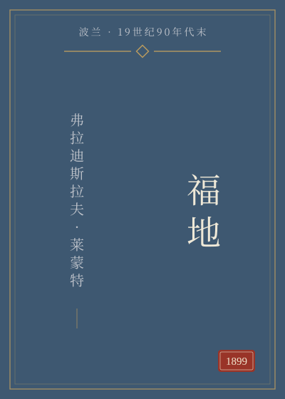
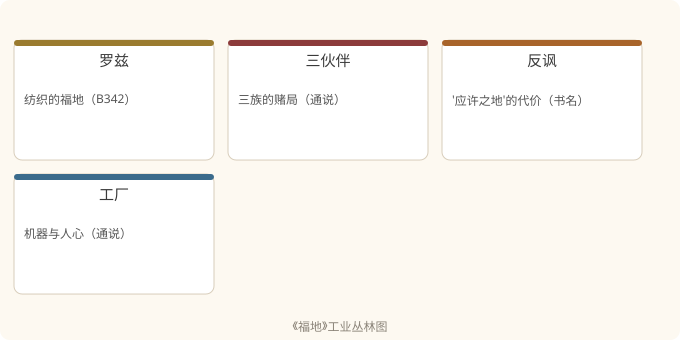

福地
一、基本信息
| 作者 | 弗拉迪斯拉夫·莱蒙特 |
|---|---|
| 成书/出版 | 1899年（Britannica B342：Ziemia obiecana (1899; The Promised Land)——罗兹纺织厂主） Wladyslaw Reymont — Encyclopaedia Britannica（百科全书） |
| 国别/地区 | 波兰 |
| 时代 | 近代 · 19世纪90年代末 |
| 体裁 | 长篇小说 |
| 语言 | 波兰语 |

《福地》工业丛林图（主题·结构图）
二、创作背景
Britannica（B342）：Ziemia obiecana——'set in the industrial town of Łódź, portraying textile mill owners' lives'——罗兹纺织工业城（1974年电影）。
Britannica（B342）：莱蒙特——1924诺奖。
题材（通说待核）：三个伙伴（波兰/德/犹太）的发财梦——'福地'的反讽。
三、内容脉络
（通说待核）罗兹：卡罗尔与两个伙伴的工厂赌局。
（通说待核）'福地'（应许之地）的代价。
四、主要人物表
| 人物 | 身份 | 说明 |
|---|---|---|
| 卡罗尔·博罗维耶茨基 | 波兰厂主 | （通说待核，B342未载） |
| 马克斯/莫伊泽 | 德/犹伙伴 | （通说待核） |
五、主题与艺术特点
- 工业罗兹的丛林（B342：textile mill owners）。
- '福地'的反讽（书名语境——通说待核）。
- 三族的生意（通说待核）。
六、影响与评论
- Britannica：1974年拍成电影（B342）。
Wladyslaw Reymont — Encyclopaedia Britannica（百科全书） - Britannica：1924诺奖（B342 交叉）。
Wladyslaw Reymont — Encyclopaedia Britannica（百科全书）
七、阅读建议
难点
- 罗兹三族工业史。
- '应许之地'的反讽。
- 《福地》中译本（人民文学等——通说待核）。
- 波兰文原版（公有领域）。
莱蒙特工业篇；与《农民》对读。
八、待核实
- 卡罗尔等三人名核对（通说）。
- 1897-98连载与1899成书待核。
- 1975年电影（瓦伊达说）待核——B342载1974。